Example_simulation.Rmd
library(powerHaDeX)The package powerHaDeX is a tool for simulating and analyzing data coming from HDX-MS experiments along with the possibility of comparing the power of the tests verifying differences in deuteration levels. The functionality of the simulation involves generating a theoretical spectrum along with its replications, replicating the deuterium uptake curves obtained from spectra, and rejection rate estimation for comparison of the tests for differences in deuteration. Let us go through the process of simulation and all its features.
The first step of the simulation is the generation of theoretical spectra of a deuterated peptide over time. To do so, the function simulate_theoretical_spectra is used. There is the possibility of simulation a mass spectrum for more than one point of time and more than one charge by specifying the parameters charge and times. Providing vector of charges and/or vector of exposure times we obtain a data table of spectra consistent with assumed parameters.
For example, a single spectrum can be simulated as below
set.seed(17)
theo_spectrum <- simulate_theoretical_spectra(sequence = "LVRKDLQN",
charge = 4,
protection_factor = 100,
times = 0.167,
pH = 7.5,
temperature = 15,
n_molecules = 500,
time_step_const = 1,
use_markov = TRUE)
theo_spectrum
#> Exposure PH Intensity Mz Charge Sequence PF
#> 1: 0.000 7.5 0.5801405135 247.1502 4 LVRKDLQN 100
#> 2: 0.000 7.5 0.3031692943 247.1502 4 LVRKDLQN 100
#> 3: 0.000 7.5 0.0919265899 247.1502 4 LVRKDLQN 100
#> 4: 0.000 7.5 0.0204531418 247.1502 4 LVRKDLQN 100
#> 5: 0.000 7.5 0.0036689790 247.1502 4 LVRKDLQN 100
#> 6: 0.000 7.5 0.0005576524 247.1502 4 LVRKDLQN 100
#> 7: 0.167 7.5 0.5674249890 247.1502 4 LVRKDLQN 100
#> 8: 0.167 7.5 0.3092885885 247.4017 4 LVRKDLQN 100
#> 9: 0.167 7.5 0.0965820258 247.6533 4 LVRKDLQN 100
#> 10: 0.167 7.5 0.0220274042 247.9049 4 LVRKDLQN 100
#> 11: 0.167 7.5 0.0040385691 248.1565 4 LVRKDLQN 100
#> 12: 0.167 7.5 0.0006261540 248.4080 4 LVRKDLQN 100As we can see in the output - we obtain a spectrum for the given time of measurement 0.167 sec and control measurement measured directly after adding the buffer (conventionally at time equal to 0). Each row of the data is correspondent to a single peak in the spectrum. Such a result for a particular time can be visualized using powerHaDeX as shown below.
plot_spectra(theo_spectrum)
We can also draw the measurement at the time 0 specifying control_time = TRUE as below.
plot_spectra(theo_spectrum, control_time = TRUE)
As said before, more than one spectrum can be simulated for different exposure times and charges. Such a case is shown in the following code. We specify two values of charge (3 and 5) and time of measurements (0.167 and 5).
set.seed(17)
theo_spectra <- simulate_theoretical_spectra(sequence = "LVRKDLQN",
charge = c(3, 5),
protection_factor = 100,
times = c(0.167, 5),
pH = 7.5,
temperature = 15,
n_molecules = 500,
time_step_const = 1,
use_markov = TRUE)
head(theo_spectra)
#> Exposure PH Intensity Mz Charge Sequence PF
#> 1: 0 7.5 0.58014051 329.1978 3 LVRKDLQN 100
#> 2: 0 7.5 0.58014051 197.9216 5 LVRKDLQN 100
#> 3: 0 7.5 0.30316929 329.1978 3 LVRKDLQN 100
#> 4: 0 7.5 0.30316929 197.9216 5 LVRKDLQN 100
#> 5: 0 7.5 0.09192659 329.1978 3 LVRKDLQN 100
#> 6: 0 7.5 0.09192659 197.9216 5 LVRKDLQN 100Such a result can be also displayed on the plot as shown below.
plot_spectra(theo_spectra)To generate replications of the experiment of hydrogen-deuterium exchange the function add_noise_to_spectra can be used. We need to evaluate get_undeuterated_mass and get_spectra_list first as in the code below. By setting compare_pairs = FALSE we do not pair the spectra by protection factors (in the case of our example we did not provide more than one value of protection factor yet).
undeuterated_mass = get_undeuterated_mass(theo_spectra)
spectra = get_spectra_list(theo_spectra)
replicated_spectra = add_noise_to_spectra(spectra,
undeuterated_mass = undeuterated_mass,
n_experiments = 2)
replicated_spectra
#> [[1]]
#> [[1]][[1]]
#> Exposure PH Intensity Mz Charge Sequence PF Rep
#> 1: 0 7.5 0.5801405135 329.2710 3 LVRKDLQN 100 1
#> 2: 0 7.5 0.5801405135 197.8407 5 LVRKDLQN 100 1
#> 3: 0 7.5 0.3031692943 329.2529 3 LVRKDLQN 100 1
#> 4: 0 7.5 0.3031692943 197.8921 5 LVRKDLQN 100 1
#> 5: 0 7.5 0.0919265899 329.1015 3 LVRKDLQN 100 1
#> ---
#> 148: 5 7.5 0.1778535948 198.2987 5 LVRKDLQN 100 4
#> 149: 5 7.5 0.0592038626 198.4566 5 LVRKDLQN 100 4
#> 150: 5 7.5 0.0160770746 198.7358 5 LVRKDLQN 100 4
#> 151: 5 7.5 0.0036482453 198.9126 5 LVRKDLQN 100 4
#> 152: 5 7.5 0.0006591334 199.1315 5 LVRKDLQN 100 4
#>
#> [[1]][[2]]
#> Exposure PH Intensity Mz Charge Sequence PF Rep
#> 1: 0 7.5 0.5801405135 329.1846 3 LVRKDLQN 100 1
#> 2: 0 7.5 0.5801405135 197.9346 5 LVRKDLQN 100 1
#> 3: 0 7.5 0.3031692943 329.2408 3 LVRKDLQN 100 1
#> 4: 0 7.5 0.3031692943 197.9660 5 LVRKDLQN 100 1
#> 5: 0 7.5 0.0919265899 329.2185 3 LVRKDLQN 100 1
#> ---
#> 148: 5 7.5 0.1778535948 198.3378 5 LVRKDLQN 100 4
#> 149: 5 7.5 0.0592038626 198.5802 5 LVRKDLQN 100 4
#> 150: 5 7.5 0.0160770746 198.8372 5 LVRKDLQN 100 4
#> 151: 5 7.5 0.0036482453 198.8897 5 LVRKDLQN 100 4
#> 152: 5 7.5 0.0006591334 199.0758 5 LVRKDLQN 100 4The output of the function add_noise_to_spectra is adapted to the power calculations. Therefore, it is a list of two elements: the first one is correspondent to the pair of protection factors (in the case when compare_pairs = FALSE we consider all protection factors jointly) and the second is correspondent to the repetitions of the whole experiment (used for the needs of power calculations). By setting the number of experiments n_experiments = 2 we simulate two experiments, that is (by default) 4 replicates of measurements for given time points, duplicated. The mentioned replicates are defined in the column Rep.
There is an option of generation noisy spectra such that they are prepared for the pairwise testing procedure (for paired states). To take a look at such an example, let us use theo_spectra generated previously for protection factor = 100 and simulate theoretical spectra at state protection factor = 200 using the function simulate_theoretical_spectra:
theo_spectra_pf_100 <- theo_spectra
theo_spectra_pf_200 <- simulate_theoretical_spectra(sequence = "LVRKDLQN",
charge = c(3, 5),
protection_factor = 200,
times = c(0.167, 5),
pH = 7.5,
temperature = 15,
n_molecules = 500,
time_step_const = 1,
use_markov = TRUE)
theo_spectra_two_states <- rbind(theo_spectra_pf_100, theo_spectra_pf_200)A data table of spectra at different states (theo_spectra_two_states here) can be used as the argument in the functions responsible for adding noise. As explained before, we use the functions get_undeuterated_mass and get_spectra_list first. We specify the need for the data grouped pairwise in the function get_spectra_list by setting compare_pairs = TRUE and reference = "all" as below
undeuterated_mass = get_undeuterated_mass(theo_spectra_two_states)
spectra = get_spectra_list(theo_spectra_two_states,
compare_pairs = TRUE,
reference = "all")
replicated_spectra_paired = add_noise_to_spectra(spectra,
undeuterated_mass = undeuterated_mass,
n_experiments = 2)
replicated_spectra_paired
#> [[1]]
#> [[1]][[1]]
#> Exposure PH Intensity Mz Charge Sequence PF Experimental_state
#> 1: 0 7.5 0.5801405135 329.2359 3 LVRKDLQN 100 A
#> 2: 0 7.5 0.5801405135 197.8829 5 LVRKDLQN 100 A
#> 3: 0 7.5 0.3031692943 329.2191 3 LVRKDLQN 100 A
#> 4: 0 7.5 0.3031692943 197.9121 5 LVRKDLQN 100 A
#> 5: 0 7.5 0.0919265899 329.2629 3 LVRKDLQN 100 A
#> ---
#> 300: 5 7.5 0.1505546082 198.2923 5 LVRKDLQN 200 B
#> 301: 5 7.5 0.0468899753 198.4946 5 LVRKDLQN 200 B
#> 302: 5 7.5 0.0114541548 198.6889 5 LVRKDLQN 200 B
#> 303: 5 7.5 0.0023078340 198.9545 5 LVRKDLQN 200 B
#> 304: 5 7.5 0.0003408244 199.1208 5 LVRKDLQN 200 B
#> Rep
#> 1: 1
#> 2: 1
#> 3: 1
#> 4: 1
#> 5: 1
#> ---
#> 300: 4
#> 301: 4
#> 302: 4
#> 303: 4
#> 304: 4
#>
#> [[1]][[2]]
#> Exposure PH Intensity Mz Charge Sequence PF Experimental_state
#> 1: 0 7.5 0.5801405135 329.2717 3 LVRKDLQN 100 A
#> 2: 0 7.5 0.5801405135 197.8954 5 LVRKDLQN 100 A
#> 3: 0 7.5 0.3031692943 329.1712 3 LVRKDLQN 100 A
#> 4: 0 7.5 0.3031692943 198.0092 5 LVRKDLQN 100 A
#> 5: 0 7.5 0.0919265899 329.2547 3 LVRKDLQN 100 A
#> ---
#> 300: 5 7.5 0.1505546082 198.3219 5 LVRKDLQN 200 B
#> 301: 5 7.5 0.0468899753 198.5474 5 LVRKDLQN 200 B
#> 302: 5 7.5 0.0114541548 198.6426 5 LVRKDLQN 200 B
#> 303: 5 7.5 0.0023078340 198.8887 5 LVRKDLQN 200 B
#> 304: 5 7.5 0.0003408244 199.1392 5 LVRKDLQN 200 B
#> Rep
#> 1: 1
#> 2: 1
#> 3: 1
#> 4: 1
#> 5: 1
#> ---
#> 300: 4
#> 301: 4
#> 302: 4
#> 303: 4
#> 304: 4
#>
#>
#> [[2]]
#> [[2]][[1]]
#> Exposure PH Intensity Mz Charge Sequence PF Experimental_state
#> 1: 0 7.5 0.5801405135 329.1471 3 LVRKDLQN 100 A
#> 2: 0 7.5 0.5801405135 197.9210 5 LVRKDLQN 100 A
#> 3: 0 7.5 0.3031692943 329.2649 3 LVRKDLQN 100 A
#> 4: 0 7.5 0.3031692943 197.8792 5 LVRKDLQN 100 A
#> 5: 0 7.5 0.0919265899 329.2559 3 LVRKDLQN 100 A
#> ---
#> 300: 5 7.5 0.1778535948 198.3300 5 LVRKDLQN 100 B
#> 301: 5 7.5 0.0592038626 198.5690 5 LVRKDLQN 100 B
#> 302: 5 7.5 0.0160770746 198.6702 5 LVRKDLQN 100 B
#> 303: 5 7.5 0.0036482453 199.0012 5 LVRKDLQN 100 B
#> 304: 5 7.5 0.0006591334 199.2084 5 LVRKDLQN 100 B
#> Rep
#> 1: 1
#> 2: 1
#> 3: 1
#> 4: 1
#> 5: 1
#> ---
#> 300: 4
#> 301: 4
#> 302: 4
#> 303: 4
#> 304: 4
#>
#> [[2]][[2]]
#> Exposure PH Intensity Mz Charge Sequence PF Experimental_state
#> 1: 0 7.5 0.5801405135 329.1585 3 LVRKDLQN 100 A
#> 2: 0 7.5 0.5801405135 197.9427 5 LVRKDLQN 100 A
#> 3: 0 7.5 0.3031692943 329.1631 3 LVRKDLQN 100 A
#> 4: 0 7.5 0.3031692943 197.9247 5 LVRKDLQN 100 A
#> 5: 0 7.5 0.0919265899 329.0961 3 LVRKDLQN 100 A
#> ---
#> 300: 5 7.5 0.1778535948 198.3329 5 LVRKDLQN 100 B
#> 301: 5 7.5 0.0592038626 198.4793 5 LVRKDLQN 100 B
#> 302: 5 7.5 0.0160770746 198.7649 5 LVRKDLQN 100 B
#> 303: 5 7.5 0.0036482453 198.8841 5 LVRKDLQN 100 B
#> 304: 5 7.5 0.0006591334 199.2217 5 LVRKDLQN 100 B
#> Rep
#> 1: 1
#> 2: 1
#> 3: 1
#> 4: 1
#> 5: 1
#> ---
#> 300: 4
#> 301: 4
#> 302: 4
#> 303: 4
#> 304: 4
#>
#>
#> [[3]]
#> [[3]][[1]]
#> Exposure PH Intensity Mz Charge Sequence PF Experimental_state
#> 1: 0 7.5 0.5801405135 329.1780 3 LVRKDLQN 200 A
#> 2: 0 7.5 0.5801405135 197.8701 5 LVRKDLQN 200 A
#> 3: 0 7.5 0.3031692943 329.2254 3 LVRKDLQN 200 A
#> 4: 0 7.5 0.3031692943 197.8732 5 LVRKDLQN 200 A
#> 5: 0 7.5 0.0919265899 329.1519 3 LVRKDLQN 200 A
#> ---
#> 300: 5 7.5 0.1505546082 198.3380 5 LVRKDLQN 200 B
#> 301: 5 7.5 0.0468899753 198.5193 5 LVRKDLQN 200 B
#> 302: 5 7.5 0.0114541548 198.8112 5 LVRKDLQN 200 B
#> 303: 5 7.5 0.0023078340 198.9325 5 LVRKDLQN 200 B
#> 304: 5 7.5 0.0003408244 199.1887 5 LVRKDLQN 200 B
#> Rep
#> 1: 1
#> 2: 1
#> 3: 1
#> 4: 1
#> 5: 1
#> ---
#> 300: 4
#> 301: 4
#> 302: 4
#> 303: 4
#> 304: 4
#>
#> [[3]][[2]]
#> Exposure PH Intensity Mz Charge Sequence PF Experimental_state
#> 1: 0 7.5 0.5801405135 329.2022 3 LVRKDLQN 200 A
#> 2: 0 7.5 0.5801405135 198.0410 5 LVRKDLQN 200 A
#> 3: 0 7.5 0.3031692943 329.2512 3 LVRKDLQN 200 A
#> 4: 0 7.5 0.3031692943 197.9284 5 LVRKDLQN 200 A
#> 5: 0 7.5 0.0919265899 329.2267 3 LVRKDLQN 200 A
#> ---
#> 300: 5 7.5 0.1505546082 198.3448 5 LVRKDLQN 200 B
#> 301: 5 7.5 0.0468899753 198.6165 5 LVRKDLQN 200 B
#> 302: 5 7.5 0.0114541548 198.8513 5 LVRKDLQN 200 B
#> 303: 5 7.5 0.0023078340 198.8434 5 LVRKDLQN 200 B
#> 304: 5 7.5 0.0003408244 199.0959 5 LVRKDLQN 200 B
#> Rep
#> 1: 1
#> 2: 1
#> 3: 1
#> 4: 1
#> 5: 1
#> ---
#> 300: 4
#> 301: 4
#> 302: 4
#> 303: 4
#> 304: 4As we can see, we obtained the output adapted to the pairwise comparison - each element of a list is a list of data tables (according to the argument n_experiments) for paired states. In our example, we get three pairs: 100 vs. 200 for power estimation and 100 vs. 100, 200 vs, 200 for type I error estimation.
Having noisy mass spectra simulated by the function add_noise_to_spectra as shown in the previous sections we can use the function get_deuteration_curves_from_spectra to calculate deuterium uptake as follows:
deuteration_curves <- get_deuteration_curves_from_spectra(replicated_spectra)
deuteration_curves
#> [[1]]
#> [[1]][[1]]
#> Exposure PH Charge Sequence PF Rep Mass
#> 1: 0.000 7.5 3 LVRKDLQN 100 1 984.7220
#> 2: 0.000 7.5 5 LVRKDLQN 100 1 984.2905
#> 3: 0.000 7.5 3 LVRKDLQN 100 2 984.4942
#> 4: 0.000 7.5 5 LVRKDLQN 100 2 984.3885
#> 5: 0.000 7.5 3 LVRKDLQN 100 3 984.5046
#> 6: 0.000 7.5 5 LVRKDLQN 100 3 984.7803
#> 7: 0.000 7.5 3 LVRKDLQN 100 4 984.5908
#> 8: 0.000 7.5 5 LVRKDLQN 100 4 984.4665
#> 9: 0.167 7.5 3 LVRKDLQN 100 1 985.1234
#> 10: 0.167 7.5 5 LVRKDLQN 100 1 985.0912
#> 11: 0.167 7.5 3 LVRKDLQN 100 2 985.1182
#> 12: 0.167 7.5 5 LVRKDLQN 100 2 985.0670
#> 13: 0.167 7.5 3 LVRKDLQN 100 3 985.1454
#> 14: 0.167 7.5 5 LVRKDLQN 100 3 985.5210
#> 15: 0.167 7.5 3 LVRKDLQN 100 4 985.1830
#> 16: 0.167 7.5 5 LVRKDLQN 100 4 985.1679
#> 17: 5.000 7.5 3 LVRKDLQN 100 1 985.5347
#> 18: 5.000 7.5 5 LVRKDLQN 100 1 985.7443
#> 19: 5.000 7.5 3 LVRKDLQN 100 2 985.4652
#> 20: 5.000 7.5 5 LVRKDLQN 100 2 985.5478
#> 21: 5.000 7.5 3 LVRKDLQN 100 3 985.4461
#> 22: 5.000 7.5 5 LVRKDLQN 100 3 985.3939
#> 23: 5.000 7.5 3 LVRKDLQN 100 4 985.6203
#> 24: 5.000 7.5 5 LVRKDLQN 100 4 985.6134
#> Exposure PH Charge Sequence PF Rep Mass
#>
#> [[1]][[2]]
#> Exposure PH Charge Sequence PF Rep Mass
#> 1: 0.000 7.5 3 LVRKDLQN 100 1 984.5914
#> 2: 0.000 7.5 5 LVRKDLQN 100 1 984.6269
#> 3: 0.000 7.5 3 LVRKDLQN 100 2 984.5053
#> 4: 0.000 7.5 5 LVRKDLQN 100 2 984.3073
#> 5: 0.000 7.5 3 LVRKDLQN 100 3 984.6592
#> 6: 0.000 7.5 5 LVRKDLQN 100 3 984.5060
#> 7: 0.000 7.5 3 LVRKDLQN 100 4 984.4063
#> 8: 0.000 7.5 5 LVRKDLQN 100 4 984.3590
#> 9: 0.167 7.5 3 LVRKDLQN 100 1 985.3884
#> 10: 0.167 7.5 5 LVRKDLQN 100 1 985.2198
#> 11: 0.167 7.5 3 LVRKDLQN 100 2 985.2015
#> 12: 0.167 7.5 5 LVRKDLQN 100 2 984.9362
#> 13: 0.167 7.5 3 LVRKDLQN 100 3 985.0735
#> 14: 0.167 7.5 5 LVRKDLQN 100 3 985.1214
#> 15: 0.167 7.5 3 LVRKDLQN 100 4 985.0328
#> 16: 0.167 7.5 5 LVRKDLQN 100 4 985.0761
#> 17: 5.000 7.5 3 LVRKDLQN 100 1 985.6421
#> 18: 5.000 7.5 5 LVRKDLQN 100 1 985.6240
#> 19: 5.000 7.5 3 LVRKDLQN 100 2 985.5196
#> 20: 5.000 7.5 5 LVRKDLQN 100 2 985.6061
#> 21: 5.000 7.5 3 LVRKDLQN 100 3 985.5106
#> 22: 5.000 7.5 5 LVRKDLQN 100 3 985.6861
#> 23: 5.000 7.5 3 LVRKDLQN 100 4 985.4683
#> 24: 5.000 7.5 5 LVRKDLQN 100 4 985.6079
#> Exposure PH Charge Sequence PF Rep MassAs we can see, we obtain the output analogous to the output of add_noise_to_spectra but containing deuterium uptake curves instead of mass spectra.
We can also simulate noisy deuteration curves using the direct output of simulate_theoretical_spectra. As mentioned before, we specify the number of technical replicates and executions of the experiment using the arguments n_replicates and n_experiments. An example for the case when one/“all” states are considered is shown in the following code:
get_noisy_deuteration_curves(theo_spectra,
n_replicates = 4,
n_experiments = 2,
compare_pairs = FALSE)
#> [[1]]
#> [[1]][[1]]
#> Sequence Rep State Exposure Mass Charge
#> 1: LVRKDLQN 1 100 0.000 0.0000000 3
#> 2: LVRKDLQN 1 100 0.000 0.0000000 5
#> 3: LVRKDLQN 1 100 0.167 0.5862529 3
#> 4: LVRKDLQN 1 100 0.167 0.5854435 5
#> 5: LVRKDLQN 1 100 5.000 1.0217033 3
#> 6: LVRKDLQN 1 100 5.000 0.9930022 5
#> 7: LVRKDLQN 2 100 0.000 0.0000000 3
#> 8: LVRKDLQN 2 100 0.000 0.0000000 5
#> 9: LVRKDLQN 2 100 0.167 0.3479222 3
#> 10: LVRKDLQN 2 100 0.167 0.5470459 5
#> 11: LVRKDLQN 2 100 5.000 1.0366925 3
#> 12: LVRKDLQN 2 100 5.000 1.1481261 5
#> 13: LVRKDLQN 3 100 0.000 0.0000000 3
#> 14: LVRKDLQN 3 100 0.000 0.0000000 5
#> 15: LVRKDLQN 3 100 0.167 0.8224366 3
#> 16: LVRKDLQN 3 100 0.167 0.5187992 5
#> 17: LVRKDLQN 3 100 5.000 1.0305438 3
#> 18: LVRKDLQN 3 100 5.000 0.4350522 5
#> 19: LVRKDLQN 4 100 0.000 0.0000000 3
#> 20: LVRKDLQN 4 100 0.000 0.0000000 5
#> 21: LVRKDLQN 4 100 0.167 0.3920062 3
#> 22: LVRKDLQN 4 100 0.167 0.8563719 5
#> 23: LVRKDLQN 4 100 5.000 1.0286272 3
#> 24: LVRKDLQN 4 100 5.000 0.9252842 5
#> Sequence Rep State Exposure Mass Charge
#>
#> [[1]][[2]]
#> Sequence Rep State Exposure Mass Charge
#> 1: LVRKDLQN 1 100 0.000 0.0000000 3
#> 2: LVRKDLQN 1 100 0.000 0.0000000 5
#> 3: LVRKDLQN 1 100 0.167 0.6380952 3
#> 4: LVRKDLQN 1 100 0.167 0.4741402 5
#> 5: LVRKDLQN 1 100 5.000 1.1345753 3
#> 6: LVRKDLQN 1 100 5.000 0.8061157 5
#> 7: LVRKDLQN 2 100 0.000 0.0000000 3
#> 8: LVRKDLQN 2 100 0.000 0.0000000 5
#> 9: LVRKDLQN 2 100 0.167 0.5803908 3
#> 10: LVRKDLQN 2 100 0.167 0.4503113 5
#> 11: LVRKDLQN 2 100 5.000 0.8832259 3
#> 12: LVRKDLQN 2 100 5.000 0.9580442 5
#> 13: LVRKDLQN 3 100 0.000 0.0000000 3
#> 14: LVRKDLQN 3 100 0.000 0.0000000 5
#> 15: LVRKDLQN 3 100 0.167 0.6287035 3
#> 16: LVRKDLQN 3 100 0.167 0.6156612 5
#> 17: LVRKDLQN 3 100 5.000 0.9346183 3
#> 18: LVRKDLQN 3 100 5.000 1.1377334 5
#> 19: LVRKDLQN 4 100 0.000 0.0000000 3
#> 20: LVRKDLQN 4 100 0.000 0.0000000 5
#> 21: LVRKDLQN 4 100 0.167 0.7384239 3
#> 22: LVRKDLQN 4 100 0.167 0.5794067 5
#> 23: LVRKDLQN 4 100 5.000 0.8788954 3
#> 24: LVRKDLQN 4 100 5.000 0.8209538 5
#> Sequence Rep State Exposure Mass ChargeThe case when the pairwise comparisons are considered requires providing the data simulated for different protection factors. Let us take a look at the results for theo_spectra_two_states simulated in the previous section:
deuteration_curves_paired_states <- get_noisy_deuteration_curves(theo_spectra_two_states,
n_replicates = 4,
n_experiments = 2,
compare_pairs = TRUE,
reference = "all")
deuteration_curves_paired_states
#> [[1]]
#> [[1]][[1]]
#> Sequence Rep State Exposure Mass Charge Experimental_state
#> 1: LVRKDLQN 1 100 0.000 0.0000000 3 A
#> 2: LVRKDLQN 1 100 0.000 0.0000000 5 A
#> 3: LVRKDLQN 1 100 0.167 0.8688819 3 A
#> 4: LVRKDLQN 1 100 0.167 0.2757140 5 A
#> 5: LVRKDLQN 1 100 5.000 1.0198106 3 A
#> 6: LVRKDLQN 1 100 5.000 0.6753098 5 A
#> 7: LVRKDLQN 1 200 0.000 0.0000000 3 B
#> 8: LVRKDLQN 1 200 0.000 0.0000000 5 B
#> 9: LVRKDLQN 1 200 0.167 0.5274486 3 B
#> 10: LVRKDLQN 1 200 0.167 0.8077955 5 B
#> 11: LVRKDLQN 1 200 5.000 0.9859614 3 B
#> 12: LVRKDLQN 1 200 5.000 1.1993870 5 B
#> 13: LVRKDLQN 2 100 0.000 0.0000000 3 A
#> 14: LVRKDLQN 2 100 0.000 0.0000000 5 A
#> 15: LVRKDLQN 2 100 0.167 0.8045094 3 A
#> 16: LVRKDLQN 2 100 0.167 1.1200420 5 A
#> 17: LVRKDLQN 2 100 5.000 1.1567777 3 A
#> 18: LVRKDLQN 2 100 5.000 1.1913560 5 A
#> 19: LVRKDLQN 2 200 0.000 0.0000000 3 B
#> 20: LVRKDLQN 2 200 0.000 0.0000000 5 B
#> 21: LVRKDLQN 2 200 0.167 0.7695384 3 B
#> 22: LVRKDLQN 2 200 0.167 0.8307251 5 B
#> 23: LVRKDLQN 2 200 5.000 0.8609096 3 B
#> 24: LVRKDLQN 2 200 5.000 0.8827987 5 B
#> 25: LVRKDLQN 3 100 0.000 0.0000000 3 A
#> 26: LVRKDLQN 3 100 0.000 0.0000000 5 A
#> 27: LVRKDLQN 3 100 0.167 0.4966942 3 A
#> 28: LVRKDLQN 3 100 0.167 0.6386009 5 A
#> 29: LVRKDLQN 3 100 5.000 1.0268833 3 A
#> 30: LVRKDLQN 3 100 5.000 1.1676825 5 A
#> 31: LVRKDLQN 3 200 0.000 0.0000000 3 B
#> 32: LVRKDLQN 3 200 0.000 0.0000000 5 B
#> 33: LVRKDLQN 3 200 0.167 0.7393893 3 B
#> 34: LVRKDLQN 3 200 0.167 0.5218890 5 B
#> 35: LVRKDLQN 3 200 5.000 1.0364554 3 B
#> 36: LVRKDLQN 3 200 5.000 0.7648215 5 B
#> 37: LVRKDLQN 4 100 0.000 0.0000000 3 A
#> 38: LVRKDLQN 4 100 0.000 0.0000000 5 A
#> 39: LVRKDLQN 4 100 0.167 0.5473698 3 A
#> 40: LVRKDLQN 4 100 0.167 0.3121527 5 A
#> 41: LVRKDLQN 4 100 5.000 1.0522619 3 A
#> 42: LVRKDLQN 4 100 5.000 0.7312982 5 A
#> 43: LVRKDLQN 4 200 0.000 0.0000000 3 B
#> 44: LVRKDLQN 4 200 0.000 0.0000000 5 B
#> 45: LVRKDLQN 4 200 0.167 0.6360312 3 B
#> 46: LVRKDLQN 4 200 0.167 0.7061931 5 B
#> 47: LVRKDLQN 4 200 5.000 0.9047647 3 B
#> 48: LVRKDLQN 4 200 5.000 0.9409487 5 B
#> Sequence Rep State Exposure Mass Charge Experimental_state
#>
#> [[1]][[2]]
#> Sequence Rep State Exposure Mass Charge Experimental_state
#> 1: LVRKDLQN 1 100 0.000 0.00000000 3 A
#> 2: LVRKDLQN 1 100 0.000 0.00000000 5 A
#> 3: LVRKDLQN 1 100 0.167 0.55001174 3 A
#> 4: LVRKDLQN 1 100 0.167 0.59138328 5 A
#> 5: LVRKDLQN 1 100 5.000 0.78914662 3 A
#> 6: LVRKDLQN 1 100 5.000 0.89662356 5 A
#> 7: LVRKDLQN 1 200 0.000 0.00000000 3 B
#> 8: LVRKDLQN 1 200 0.000 0.00000000 5 B
#> 9: LVRKDLQN 1 200 0.167 0.60797164 3 B
#> 10: LVRKDLQN 1 200 0.167 0.54322679 5 B
#> 11: LVRKDLQN 1 200 5.000 0.68705023 3 B
#> 12: LVRKDLQN 1 200 5.000 0.43281018 5 B
#> 13: LVRKDLQN 2 100 0.000 0.00000000 3 A
#> 14: LVRKDLQN 2 100 0.000 0.00000000 5 A
#> 15: LVRKDLQN 2 100 0.167 0.59729193 3 A
#> 16: LVRKDLQN 2 100 0.167 0.50224550 5 A
#> 17: LVRKDLQN 2 100 5.000 0.89469821 3 A
#> 18: LVRKDLQN 2 100 5.000 0.82198533 5 A
#> 19: LVRKDLQN 2 200 0.000 0.00000000 3 B
#> 20: LVRKDLQN 2 200 0.000 0.00000000 5 B
#> 21: LVRKDLQN 2 200 0.167 0.41449351 3 B
#> 22: LVRKDLQN 2 200 0.167 0.38162801 5 B
#> 23: LVRKDLQN 2 200 5.000 0.94601901 3 B
#> 24: LVRKDLQN 2 200 5.000 0.86372840 5 B
#> 25: LVRKDLQN 3 100 0.000 0.00000000 3 A
#> 26: LVRKDLQN 3 100 0.000 0.00000000 5 A
#> 27: LVRKDLQN 3 100 0.167 0.68216721 3 A
#> 28: LVRKDLQN 3 100 0.167 0.02141843 5 A
#> 29: LVRKDLQN 3 100 5.000 0.89147299 3 A
#> 30: LVRKDLQN 3 100 5.000 0.84016570 5 A
#> 31: LVRKDLQN 3 200 0.000 0.00000000 3 B
#> 32: LVRKDLQN 3 200 0.000 0.00000000 5 B
#> 33: LVRKDLQN 3 200 0.167 0.53264614 3 B
#> 34: LVRKDLQN 3 200 0.167 0.90563974 5 B
#> 35: LVRKDLQN 3 200 5.000 0.68062196 3 B
#> 36: LVRKDLQN 3 200 5.000 0.89324136 5 B
#> 37: LVRKDLQN 4 100 0.000 0.00000000 3 A
#> 38: LVRKDLQN 4 100 0.000 0.00000000 5 A
#> 39: LVRKDLQN 4 100 0.167 0.68615870 3 A
#> 40: LVRKDLQN 4 100 0.167 0.26450425 5 A
#> 41: LVRKDLQN 4 100 5.000 1.15217997 3 A
#> 42: LVRKDLQN 4 100 5.000 0.52995818 5 A
#> 43: LVRKDLQN 4 200 0.000 0.00000000 3 B
#> 44: LVRKDLQN 4 200 0.000 0.00000000 5 B
#> 45: LVRKDLQN 4 200 0.167 0.66118020 3 B
#> 46: LVRKDLQN 4 200 0.167 0.43346532 5 B
#> 47: LVRKDLQN 4 200 5.000 0.87280032 3 B
#> 48: LVRKDLQN 4 200 5.000 0.83657552 5 B
#> Sequence Rep State Exposure Mass Charge Experimental_state
#>
#>
#> [[2]]
#> [[2]][[1]]
#> Sequence Rep State Exposure Mass Charge Experimental_state
#> 1: LVRKDLQN 1 100 0.000 0.0000000 3 A
#> 2: LVRKDLQN 1 100 0.000 0.0000000 5 A
#> 3: LVRKDLQN 1 100 0.167 0.4768095 3 A
#> 4: LVRKDLQN 1 100 0.167 0.5613175 5 A
#> 5: LVRKDLQN 1 100 5.000 0.8142961 3 A
#> 6: LVRKDLQN 1 100 5.000 0.9112404 5 A
#> 7: LVRKDLQN 1 100 0.000 0.0000000 3 B
#> 8: LVRKDLQN 1 100 0.000 0.0000000 5 B
#> 9: LVRKDLQN 1 100 0.167 0.5358670 3 B
#> 10: LVRKDLQN 1 100 0.167 0.6955966 5 B
#> 11: LVRKDLQN 1 100 5.000 0.8848144 3 B
#> 12: LVRKDLQN 1 100 5.000 0.9670609 5 B
#> 13: LVRKDLQN 2 100 0.000 0.0000000 3 A
#> 14: LVRKDLQN 2 100 0.000 0.0000000 5 A
#> 15: LVRKDLQN 2 100 0.167 0.6824842 3 A
#> 16: LVRKDLQN 2 100 0.167 0.5829643 5 A
#> 17: LVRKDLQN 2 100 5.000 1.0808980 3 A
#> 18: LVRKDLQN 2 100 5.000 0.8273605 5 A
#> 19: LVRKDLQN 2 100 0.000 0.0000000 3 B
#> 20: LVRKDLQN 2 100 0.000 0.0000000 5 B
#> 21: LVRKDLQN 2 100 0.167 0.3542803 3 B
#> 22: LVRKDLQN 2 100 0.167 0.7011323 5 B
#> 23: LVRKDLQN 2 100 5.000 1.0018592 3 B
#> 24: LVRKDLQN 2 100 5.000 1.0221169 5 B
#> 25: LVRKDLQN 3 100 0.000 0.0000000 3 A
#> 26: LVRKDLQN 3 100 0.000 0.0000000 5 A
#> 27: LVRKDLQN 3 100 0.167 0.7599389 3 A
#> 28: LVRKDLQN 3 100 0.167 0.8085072 5 A
#> 29: LVRKDLQN 3 100 5.000 0.9927695 3 A
#> 30: LVRKDLQN 3 100 5.000 1.2256098 5 A
#> 31: LVRKDLQN 3 100 0.000 0.0000000 3 B
#> 32: LVRKDLQN 3 100 0.000 0.0000000 5 B
#> 33: LVRKDLQN 3 100 0.167 0.4679417 3 B
#> 34: LVRKDLQN 3 100 0.167 0.9455015 5 B
#> 35: LVRKDLQN 3 100 5.000 0.7690987 3 B
#> 36: LVRKDLQN 3 100 5.000 1.3640756 5 B
#> 37: LVRKDLQN 4 100 0.000 0.0000000 3 A
#> 38: LVRKDLQN 4 100 0.000 0.0000000 5 A
#> 39: LVRKDLQN 4 100 0.167 0.7429659 3 A
#> 40: LVRKDLQN 4 100 0.167 0.4431065 5 A
#> 41: LVRKDLQN 4 100 5.000 1.2305711 3 A
#> 42: LVRKDLQN 4 100 5.000 0.9831319 5 A
#> 43: LVRKDLQN 4 100 0.000 0.0000000 3 B
#> 44: LVRKDLQN 4 100 0.000 0.0000000 5 B
#> 45: LVRKDLQN 4 100 0.167 0.7608223 3 B
#> 46: LVRKDLQN 4 100 0.167 0.5157238 5 B
#> 47: LVRKDLQN 4 100 5.000 0.9420449 3 B
#> 48: LVRKDLQN 4 100 5.000 0.7239010 5 B
#> Sequence Rep State Exposure Mass Charge Experimental_state
#>
#> [[2]][[2]]
#> Sequence Rep State Exposure Mass Charge Experimental_state
#> 1: LVRKDLQN 1 100 0.000 0.0000000 3 A
#> 2: LVRKDLQN 1 100 0.000 0.0000000 5 A
#> 3: LVRKDLQN 1 100 0.167 0.4634742 3 A
#> 4: LVRKDLQN 1 100 0.167 0.8350539 5 A
#> 5: LVRKDLQN 1 100 5.000 0.7678225 3 A
#> 6: LVRKDLQN 1 100 5.000 1.0121998 5 A
#> 7: LVRKDLQN 1 100 0.000 0.0000000 3 B
#> 8: LVRKDLQN 1 100 0.000 0.0000000 5 B
#> 9: LVRKDLQN 1 100 0.167 0.4750667 3 B
#> 10: LVRKDLQN 1 100 0.167 0.4692972 5 B
#> 11: LVRKDLQN 1 100 5.000 1.0076020 3 B
#> 12: LVRKDLQN 1 100 5.000 0.9509027 5 B
#> 13: LVRKDLQN 2 100 0.000 0.0000000 3 A
#> 14: LVRKDLQN 2 100 0.000 0.0000000 5 A
#> 15: LVRKDLQN 2 100 0.167 0.5023049 3 A
#> 16: LVRKDLQN 2 100 0.167 0.4966683 5 A
#> 17: LVRKDLQN 2 100 5.000 0.9344318 3 A
#> 18: LVRKDLQN 2 100 5.000 0.7792464 5 A
#> 19: LVRKDLQN 2 100 0.000 0.0000000 3 B
#> 20: LVRKDLQN 2 100 0.000 0.0000000 5 B
#> 21: LVRKDLQN 2 100 0.167 0.6229240 3 B
#> 22: LVRKDLQN 2 100 0.167 0.6168183 5 B
#> 23: LVRKDLQN 2 100 5.000 1.2588303 3 B
#> 24: LVRKDLQN 2 100 5.000 0.8048048 5 B
#> 25: LVRKDLQN 3 100 0.000 0.0000000 3 A
#> 26: LVRKDLQN 3 100 0.000 0.0000000 5 A
#> 27: LVRKDLQN 3 100 0.167 0.6884906 3 A
#> 28: LVRKDLQN 3 100 0.167 0.6700916 5 A
#> 29: LVRKDLQN 3 100 5.000 1.2088672 3 A
#> 30: LVRKDLQN 3 100 5.000 0.8091150 5 A
#> 31: LVRKDLQN 3 100 0.000 0.0000000 3 B
#> 32: LVRKDLQN 3 100 0.000 0.0000000 5 B
#> 33: LVRKDLQN 3 100 0.167 0.5772441 3 B
#> 34: LVRKDLQN 3 100 0.167 0.4352822 5 B
#> 35: LVRKDLQN 3 100 5.000 1.0633172 3 B
#> 36: LVRKDLQN 3 100 5.000 0.7624823 5 B
#> 37: LVRKDLQN 4 100 0.000 0.0000000 3 A
#> 38: LVRKDLQN 4 100 0.000 0.0000000 5 A
#> 39: LVRKDLQN 4 100 0.167 0.6843514 3 A
#> 40: LVRKDLQN 4 100 0.167 0.5846838 5 A
#> 41: LVRKDLQN 4 100 5.000 1.0649440 3 A
#> 42: LVRKDLQN 4 100 5.000 0.9518970 5 A
#> 43: LVRKDLQN 4 100 0.000 0.0000000 3 B
#> 44: LVRKDLQN 4 100 0.000 0.0000000 5 B
#> 45: LVRKDLQN 4 100 0.167 0.4166306 3 B
#> 46: LVRKDLQN 4 100 0.167 0.7760045 5 B
#> 47: LVRKDLQN 4 100 5.000 0.8635095 3 B
#> 48: LVRKDLQN 4 100 5.000 1.3700233 5 B
#> Sequence Rep State Exposure Mass Charge Experimental_state
#>
#>
#> [[3]]
#> [[3]][[1]]
#> Sequence Rep State Exposure Mass Charge Experimental_state
#> 1: LVRKDLQN 1 200 0.000 0.0000000 3 A
#> 2: LVRKDLQN 1 200 0.000 0.0000000 5 A
#> 3: LVRKDLQN 1 200 0.167 0.5860856 3 A
#> 4: LVRKDLQN 1 200 0.167 0.4088091 5 A
#> 5: LVRKDLQN 1 200 5.000 0.9314306 3 A
#> 6: LVRKDLQN 1 200 5.000 0.4406770 5 A
#> 7: LVRKDLQN 1 200 0.000 0.0000000 3 B
#> 8: LVRKDLQN 1 200 0.000 0.0000000 5 B
#> 9: LVRKDLQN 1 200 0.167 0.6256725 3 B
#> 10: LVRKDLQN 1 200 0.167 0.8503172 5 B
#> 11: LVRKDLQN 1 200 5.000 1.0318344 3 B
#> 12: LVRKDLQN 1 200 5.000 1.0085049 5 B
#> 13: LVRKDLQN 2 200 0.000 0.0000000 3 A
#> 14: LVRKDLQN 2 200 0.000 0.0000000 5 A
#> 15: LVRKDLQN 2 200 0.167 0.7118991 3 A
#> 16: LVRKDLQN 2 200 0.167 0.5942822 5 A
#> 17: LVRKDLQN 2 200 5.000 0.8587224 3 A
#> 18: LVRKDLQN 2 200 5.000 1.0334573 5 A
#> 19: LVRKDLQN 2 200 0.000 0.0000000 3 B
#> 20: LVRKDLQN 2 200 0.000 0.0000000 5 B
#> 21: LVRKDLQN 2 200 0.167 0.7325176 3 B
#> 22: LVRKDLQN 2 200 0.167 0.2245484 5 B
#> 23: LVRKDLQN 2 200 5.000 0.8863298 3 B
#> 24: LVRKDLQN 2 200 5.000 0.7647333 5 B
#> 25: LVRKDLQN 3 200 0.000 0.0000000 3 A
#> 26: LVRKDLQN 3 200 0.000 0.0000000 5 A
#> 27: LVRKDLQN 3 200 0.167 0.5883306 3 A
#> 28: LVRKDLQN 3 200 0.167 0.4096724 5 A
#> 29: LVRKDLQN 3 200 5.000 0.7373130 3 A
#> 30: LVRKDLQN 3 200 5.000 0.7821204 5 A
#> 31: LVRKDLQN 3 200 0.000 0.0000000 3 B
#> 32: LVRKDLQN 3 200 0.000 0.0000000 5 B
#> 33: LVRKDLQN 3 200 0.167 0.4654000 3 B
#> 34: LVRKDLQN 3 200 0.167 0.5476341 5 B
#> 35: LVRKDLQN 3 200 5.000 1.0301946 3 B
#> 36: LVRKDLQN 3 200 5.000 0.6265989 5 B
#> 37: LVRKDLQN 4 200 0.000 0.0000000 3 A
#> 38: LVRKDLQN 4 200 0.000 0.0000000 5 A
#> 39: LVRKDLQN 4 200 0.167 0.5419040 3 A
#> 40: LVRKDLQN 4 200 0.167 0.4712411 5 A
#> 41: LVRKDLQN 4 200 5.000 0.6568930 3 A
#> 42: LVRKDLQN 4 200 5.000 0.7405925 5 A
#> 43: LVRKDLQN 4 200 0.000 0.0000000 3 B
#> 44: LVRKDLQN 4 200 0.000 0.0000000 5 B
#> 45: LVRKDLQN 4 200 0.167 0.3225097 3 B
#> 46: LVRKDLQN 4 200 0.167 0.6613463 5 B
#> 47: LVRKDLQN 4 200 5.000 0.6763167 3 B
#> 48: LVRKDLQN 4 200 5.000 1.0101823 5 B
#> Sequence Rep State Exposure Mass Charge Experimental_state
#>
#> [[3]][[2]]
#> Sequence Rep State Exposure Mass Charge Experimental_state
#> 1: LVRKDLQN 1 200 0.000 0.0000000 3 A
#> 2: LVRKDLQN 1 200 0.000 0.0000000 5 A
#> 3: LVRKDLQN 1 200 0.167 0.5951292 3 A
#> 4: LVRKDLQN 1 200 0.167 0.0953842 5 A
#> 5: LVRKDLQN 1 200 5.000 0.9973953 3 A
#> 6: LVRKDLQN 1 200 5.000 0.2267871 5 A
#> 7: LVRKDLQN 1 200 0.000 0.0000000 3 B
#> 8: LVRKDLQN 1 200 0.000 0.0000000 5 B
#> 9: LVRKDLQN 1 200 0.167 0.4308534 3 B
#> 10: LVRKDLQN 1 200 0.167 0.7194207 5 B
#> 11: LVRKDLQN 1 200 5.000 0.7010559 3 B
#> 12: LVRKDLQN 1 200 5.000 0.8846406 5 B
#> 13: LVRKDLQN 2 200 0.000 0.0000000 3 A
#> 14: LVRKDLQN 2 200 0.000 0.0000000 5 A
#> 15: LVRKDLQN 2 200 0.167 0.5605016 3 A
#> 16: LVRKDLQN 2 200 0.167 0.4959362 5 A
#> 17: LVRKDLQN 2 200 5.000 0.8780305 3 A
#> 18: LVRKDLQN 2 200 5.000 0.9230153 5 A
#> 19: LVRKDLQN 2 200 0.000 0.0000000 3 B
#> 20: LVRKDLQN 2 200 0.000 0.0000000 5 B
#> 21: LVRKDLQN 2 200 0.167 0.3885789 3 B
#> 22: LVRKDLQN 2 200 0.167 0.6586108 5 B
#> 23: LVRKDLQN 2 200 5.000 0.6903721 3 B
#> 24: LVRKDLQN 2 200 5.000 0.8071477 5 B
#> 25: LVRKDLQN 3 200 0.000 0.0000000 3 A
#> 26: LVRKDLQN 3 200 0.000 0.0000000 5 A
#> 27: LVRKDLQN 3 200 0.167 0.7484155 3 A
#> 28: LVRKDLQN 3 200 0.167 0.8489969 5 A
#> 29: LVRKDLQN 3 200 5.000 0.8271001 3 A
#> 30: LVRKDLQN 3 200 5.000 1.1104277 5 A
#> 31: LVRKDLQN 3 200 0.000 0.0000000 3 B
#> 32: LVRKDLQN 3 200 0.000 0.0000000 5 B
#> 33: LVRKDLQN 3 200 0.167 0.4790403 3 B
#> 34: LVRKDLQN 3 200 0.167 0.3714524 5 B
#> 35: LVRKDLQN 3 200 5.000 0.6852605 3 B
#> 36: LVRKDLQN 3 200 5.000 0.9867953 5 B
#> 37: LVRKDLQN 4 200 0.000 0.0000000 3 A
#> 38: LVRKDLQN 4 200 0.000 0.0000000 5 A
#> 39: LVRKDLQN 4 200 0.167 0.5690252 3 A
#> 40: LVRKDLQN 4 200 0.167 0.6762240 5 A
#> 41: LVRKDLQN 4 200 5.000 0.6845991 3 A
#> 42: LVRKDLQN 4 200 5.000 1.0641156 5 A
#> 43: LVRKDLQN 4 200 0.000 0.0000000 3 B
#> 44: LVRKDLQN 4 200 0.000 0.0000000 5 B
#> 45: LVRKDLQN 4 200 0.167 0.4727656 3 B
#> 46: LVRKDLQN 4 200 0.167 0.9270015 5 B
#> 47: LVRKDLQN 4 200 5.000 1.0647175 3 B
#> 48: LVRKDLQN 4 200 5.000 0.9172156 5 B
#> Sequence Rep State Exposure Mass Charge Experimental_stateThe package powerHaDeX provides a possibility of the estimation of rejection rate in pairwise testing of differences in deuteration levels.
The tests available in the package are:
semiparametric - Semiparametric test,
houde - Damian Houde’s confidence intervals test (Houde, Berkowitz, and Engen 2011),
hdx_analyzer - HDX-Analyzer model (Liu et al. 2011),
memhdx_model - MEMHDX model (Hourdel et al. 2016).
We can use the function calculate_hdx_power to execute the testing procedure on the data simulated by get_noisy_deuteration_curves. Example usage of the function is shown below
calculate_hdx_power(deuteration_curves_paired_states,
tests = list(houde),
summarized = FALSE)
#> Sequence Num_replicates Num_states Num_timepoints Test State_1 State_2
#> 1: LVRKDLQN 4 2 3 Houde 100 200
#> 2: LVRKDLQN 4 2 3 Houde 100 200
#> 3: LVRKDLQN 4 2 3 Houde 100 100
#> 4: LVRKDLQN 4 2 3 Houde 100 100
#> 5: LVRKDLQN 4 2 3 Houde 200 200
#> 6: LVRKDLQN 4 2 3 Houde 200 200
#> Test_statistic P_value Significant_difference Time Transformation AIC logLik
#> 1: NA NA FALSE NA NA NA NA
#> 2: NA NA FALSE NA NA NA NA
#> 3: NA NA FALSE NA NA NA NA
#> 4: NA NA FALSE NA NA NA NA
#> 5: NA NA FALSE NA NA NA NA
#> 6: NA NA FALSE NA NA NA NAThere is a possibility of simulate the rejection rate of another test using an external implementation. Such a test function for pairwise testing should be of specific shape as below:
example_test <- function(data, significance_level) {
States = unique(data$State)
# testing procedure here
return(data.table::data.table(Test = "Example test",
State_1 = States[1],
State_2 = States[2],
Test_statistic = NA,
P_value = NA,
Significant_difference = #TRUE or FALSE,
Time = NA,
Transformation = NA,
AIC = NA,
logLik = NA))
}where the parameter data is one experiment, that is one data table obtained from the function get_noisy_deuteration_curves. In order to add such a test to the simulation, we should set tests = list(houde, example_test).